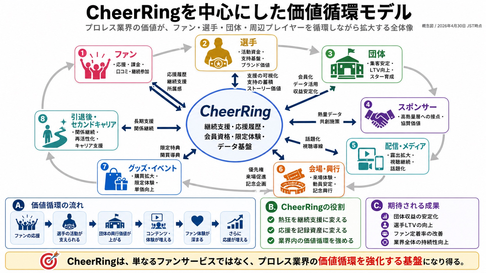
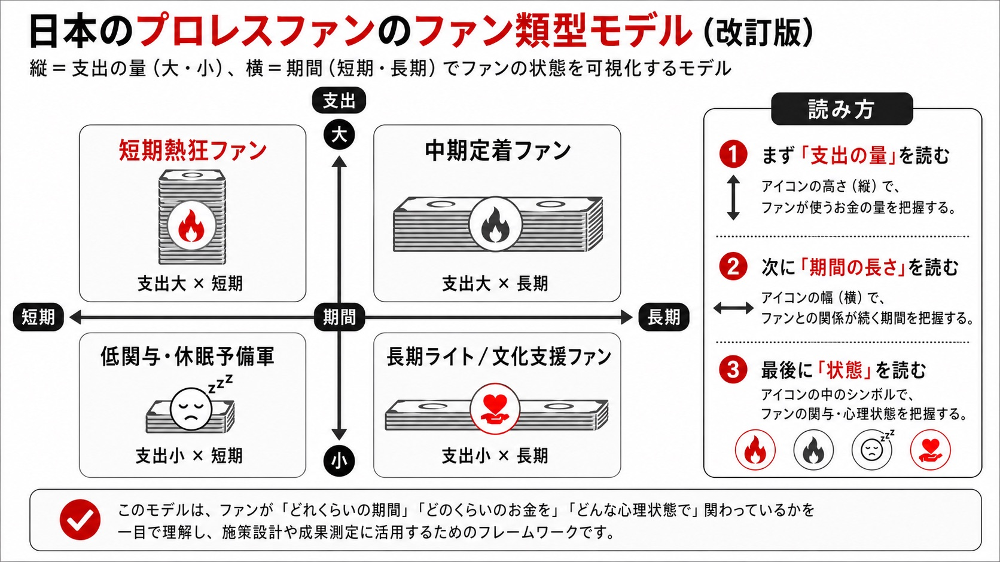
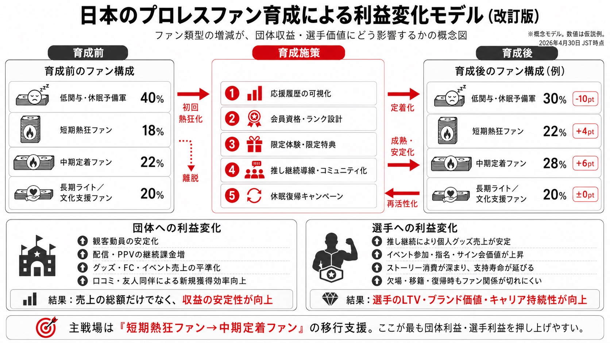
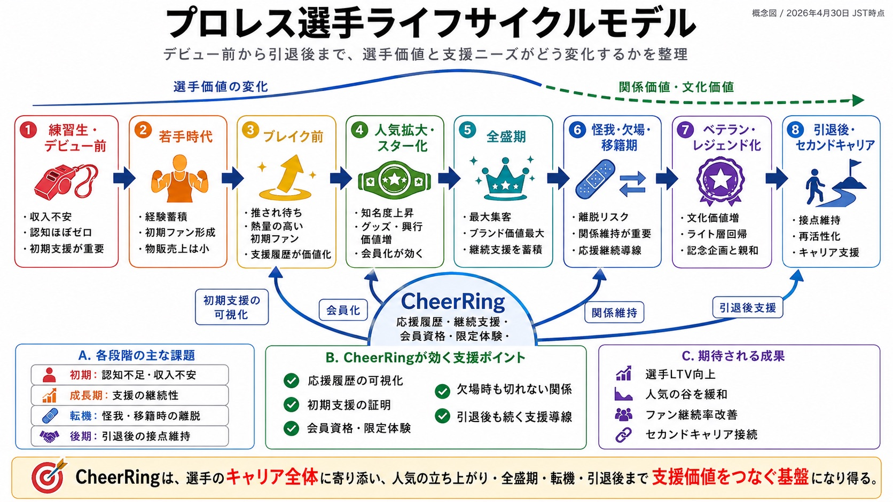
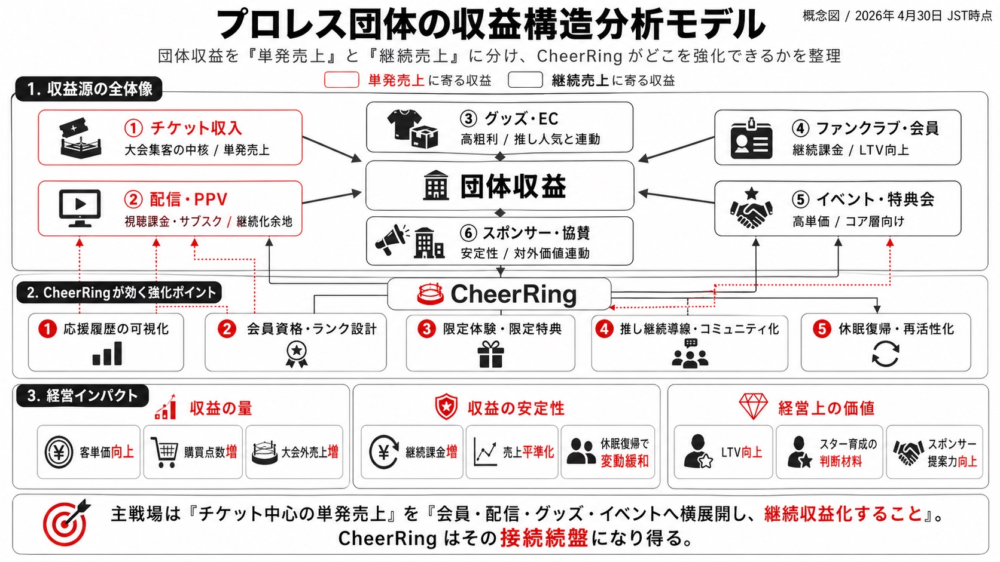

データが分かれる
FC、EC、チケット、配信、SNSが別々に存在し、選手単位の継続応援が横断で見えにくい。
多くの団体はすでに会員、チケット、物販、配信、SNSを持っています。 ただし、それぞれの履歴は分断されやすく、誰がどの選手に長く伴走しているかまでは見えにくい状態です。
FC、EC、チケット、配信、SNSが別々に存在し、選手単位の継続応援が横断で見えにくい。
誰が何を買ったかは分かっても、どの選手をどの文脈で支えているかは残りにくい。
欠場中、遠征中、復帰前、引退後など、興行日以外の接点を設計しにくい。
地方・海外・配信中心のファンは熱量が高くても、既存指標では十分に反映されにくい。
既存資産を奪うのではなく、既存データでは見えにくい「選手単位の応援履歴」を上に重ねる設計です。 団体は今あるファンビジネスを保ったまま、選手別企画の精度を上げられます。
会員情報、購買履歴、来場履歴、視聴履歴をそれぞれの既存システムで保持します。
誰が、いつから、どの選手を、どの熱量で応援しているかをデジタル会員証として記録します。
応援履歴をもとに、既存導線と競合しにくい企画から検証します。
CheerRINGは会員証を売る単独施策ではありません。 ファン育成、選手ライフサイクル、団体収益、業界全体の価値循環をつなぐ補完レイヤーとして設計します。
団体にとっての価値は、短期売上だけではなく、ファンが長く残り、選手の物語が続き、 チケット・配信・グッズ・スポンサーへ送客できる状態を作ることです。
ファンの応援が選手活動を支え、団体の興行価値、スポンサー価値、配信・イベント・グッズへ循環する全体像。

支出量と期間でファン状態を読み、短期熱狂・中期定着・長期ライト層への施策を分ける。

応援履歴、会員資格、限定体験、コミュニティ化で、短期熱狂ファンを中期定着ファンへ移行させる。

練習生、若手、ブレイク、全盛期、怪我・移籍、ベテラン、引退後まで、支援ニーズの変化を整理。

チケット中心の単発売上を、会員・配信・グッズ・イベントへ横展開し、継続収益化する接続基盤。

大手・中堅団体にも、小規模団体にも共通して重要なのは、いきなり既存の仕組みを変えないことです。 CheerRINGは、選手1名、企画1本、限定席の一部など、検証しやすい単位から始められます。
若手数名に限定してデジタル会員証を発行。選手別の応援熱量、継続率、限定メッセージ反応を検証します。
欠場・復帰前後の選手を対象に、試合日以外の接点と復帰戦への送客可能性を確認します。
一般販売を残したまま、一部席だけを会員証保有者向けに先行案内。既存販路への影響を抑えて検証します。
会場に来づらいファン向けに応援証と限定コンテンツを提供。配信ファンの可視化と多言語対応を試します。
CheerRINGの主目的は、単発の会員証販売だけではありません。 応援履歴を使って、選手別の限定企画、復帰ロード、引退ロード、地方大会、海外ファン施策の精度を上げることです。
決済手数料等の正式条件は導入時に整理します。数字は提案資料のBase Caseに基づく参考値です。
システム連携が必要な場合も、最初から大きく作り込みません。 CSV連携、手動連携、限定PoCなど、負荷の低い方法から設計します。
既存FC、EC、チケット、配信、所属選手、導入制約を確認します。
対象選手、期間、告知範囲、収益分配、団体確認フローを決めます。
早期登録ファン向けに限定公開し、反応と継続率を測ります。
収益、継続率、運用負荷、既存事業への影響を見て拡大可否を決めます。
投機性、既存ファンクラブとの競合、データの扱い、団体公式ブランドでの提供可否は、初回商談で先に整理します。
競合ではなく補完です。既存FCが持つ会員情報や決済に対して、CheerRINGは選手単位の応援履歴を重ねます。
不要です。ファンの入口はメールアドレス登録を基本にし、ウォレットや暗号資産購入を前提にしません。
値上がり益、配当、元本保証、転売メリットを訴求しない方針です。正式導入前に法務確認を行います。
可能です。大手・中堅団体では、CheerRINGを前面に出さず「団体公式デジタル応援証」として設計できます。
団体の既存導線を前提に、どのPoCなら邪魔にならず、どの選手・興行・ファン層で試すべきかを一緒に整理します。
団体名、相談したい企画、既存ファンクラブやECの有無を添えてご連絡ください。
メールで相談する